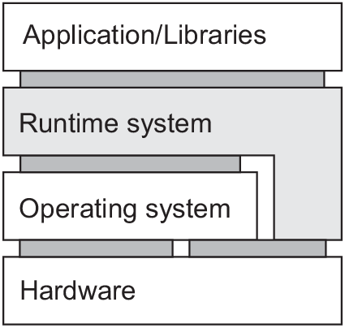

- claud computing management platform
- one place for bare metal, virtual machines, and containers
- Why OpenStack?
- What does it mean to be open source?
- possibilities to contribute
- implementation - great deal in python
- OpenStack is a framework
- OpenStack has a loosely architecture
Distributed systems
4. Virtualization
Virtualization
- middleware and applications are often more stable then hardware and low level software
- helps in porting the legacy interfaces to the new platforms
- diversity of platforms and machines reduced by running application on its own virtual machine
Virtualization (cont.)
- virtual machine possibly includes operating system and related libraries
- operating system runs on a common platform
- high degree of portability and flexibility
- portability - perhaps, the most important reason why virtualization plays a big role in distributed systems
Types of interfaces
- various types of virtualization depend on various types of interfaces
Types of interfaces
- four types of interfaces on three levels
- insturction set architecture(ISA) set of machine instructions interface between hardware and software
- privileged instructions - run by the operating system
- general instructions - which are run by any program
- system calls offered by an operating system
- application programming interface (API) - library calls (in many cases system calls are hidden by APIs)
- virtualization should mimic the behavior of these interfaces
Virtualization types

- process virtual machine
- native virtual machine monitor
- host virtual machine monitor
-
Java Virtual Machine, Windows applications on Unix
-
directly implemented on the underlying hardware, guest operating systems
-
directly implemented on the underlying hardware, more priviledges than user-level application
Virtualization in distributed systems
- most important application in cloud computing
- three types of services
- Infrastructure-as-a-Service (IaaS) - basic infrastructure
- Platform-as-a-Service (PaaS) - system-level services
- Software-as-a-Service (SaaS) - actual applications
- virtualization has a key role in IaaS
- renting virtual instead of physical machines
Virtualization examples - EC2
- Amazon Elastic Compute Cloud (EC2)
- several networked virtual servers - basis of a distributed system
- available preconfigured machine images Amazon Machine Images(AMI)
- AMI example - LAMP image (Linux, Apache, MySQL, PHP)
- launched is called EC2 instance
- user hardly ever know where an instance is being executed
Virtualization examples - OpenStack
- Open Stack - next generation of private cloud solution
- more flexibility to manage underlying infrastructure
- has brought together thousands of enterprises
- deployment of Open Stack is a challenging step - requires deep knowledge of automation, orchestration and flexibility
- VMware, IBM, Red Hat, PayPal, eBay - some of big companies having scalable cloud based on OpenStack
- completely open cource project
OpenStack basics
Applications of OpenStack
- CERN - one of the largest OpenStack clouds
- eCommerce - Walmart has e-commerce platform on the OpenStack
- Air companies - American airlines uses OpenStack to deliver PaaS
- OpenStack.org to find various user stories
OpenStack releases
- Every six months new release - all should be backward compatible
- release names
- OpenStack release names
- Train, Stein, Rocky, Queens, Pike, Mitaka
- Mitaka - is used in our examples
OpenStack - vendors
- Private Cloud Distro
- Mirantis, Red Hat, SUSE, Ubuntu
- Private Cloud as a Service
- IBM Blue Box, Cisco, Rackspace
OpenStack - core services (main components)
- Horizon (Daschboard)- web interface
- Keystone (Identity) - authentication (using specific tokens)
- Glance (image management) - already preinstalled and ready to run)
- Neutron - virtual networking
- Nova - calling peaces and put them toghether
- calling the hypervisor
- launching the image to instances
- Cinder (volume service) - block storage volume- virtual machines are not persistent and here we have persistant data
- Swift (object storage) - that is file storage
Dashboard (Horizon) - Web interface

Identity (Keystone)
- Centralized catalog of identity services Keystone on github
- whenever using some component we have to be authenticated
- many authentication options
- user, password
- tokens
How to deploy the workload?
- Installation and setting up configuration on many instances is time consuming activity
- We don't have to do our installation manually
- Many instancess together with specific network topology can be managed automaticaly
- Ansible - automatic deployment
Ansible
- simple IT automation engine
- simple to deploy - uses a very simple language - YAML
- automation jobs explained in the form of Ansible Playbooks
- operates over standard SSH connections
- Ansible example of professor Pfisterer
Literature used for these slides
- Ansible web site
- OpenStack Cloud Computing Cookbook, third edition , Kevin Jackson, Cody Bunch, Egle Sigler
- EDSC - DHBW youtube channel
- Building Ansible Playbooks Step-by-Step
- OpenStack for architects , Michael Solberg, Ben Silverman